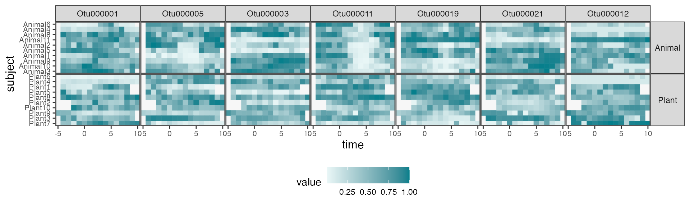
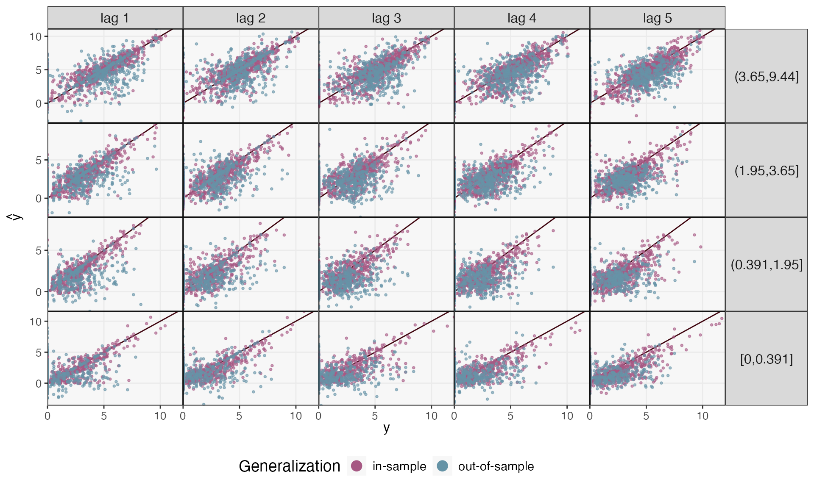
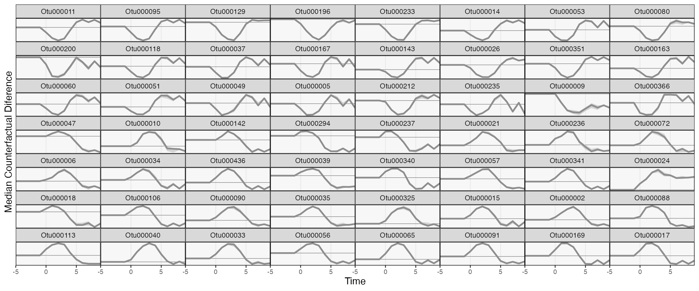

Diet Interventions as Ecological Shifts
diet.RmdData and Problem Context
(David, Maurice, Carmody, Gootenberg, Button, Wolfe, Ling, Devlin, Varma, Fischbach, Biddinger, Dutton, and Turnbaugh, 2013) was one of the first studies to draw attention to the way the human microbiomes could quickly respond to changes in host behavior. This had implications for a lot of how we think of the microbiome in health and disease – it wouldn’t make sense to try engineering/manipulating human microbiomes if it were not as sensitive to external change as the study found.
The study includes 20 participates, half of whom were assigned to “plant” and “animal” diet interventions. Samples were collected over two weeks, and during (what must have been a quite memorable…) five consecutive days of the study, participants were instructed to only eat foods from their intervention diet type. If you think of the microbiome as an ecosystem, such a dramatic shift in diet could be likened to an extreme environmental event, like a flood or a wildfire. The question was how the microbiome changed in response – which taxa (if any) were affected, and how long did the intervention effects last.
Before diving into the data, let’s load some libraries. The
th definition is just used to customize the default
ggplot2 figure appearance.
library(mbtransfer)
library(tidyverse)
library(glue)
library(tidymodels)
th <- theme_bw() +
theme(
panel.grid.minor = element_blank(),
panel.background = element_rect(fill = "#f7f7f7"),
panel.border = element_rect(fill = NA, color = "#0c0c0c", linewidth = 0.6),
axis.text = element_text(size = 8),
axis.title = element_text(size = 12),
legend.position = "bottom"
)
theme_set(th)
set.seed(20230524)The block below reads in the data. These are lightly
processed versions of data hosted in the MITRE
repository (Bogart, Creswell, and Gerber, 2019). We’ve selected only
those features that are used in this analysis, and we have reshaped the
data into a format that can be used by our ts_from_dfs
function.
subject <- read_csv("https://figshare.com/ndownloader/files/40275934/subject.csv")
interventions <- read_csv("https://figshare.com/ndownloader/files/40279171/interventions.csv") |>
column_to_rownames("sample")
reads <- read_csv("https://figshare.com/ndownloader/files/40279108/reads.csv") |>
column_to_rownames("sample")
samples <- read_csv("https://figshare.com/ndownloader/files/40275943/samples.csv")Next, we unify the read counts, subject variables, and intervention
status into a ts_inter class. All of
mbtransfer’s functions expect data structured according to
this class. We interpolate all the timepoints onto a daily grid. This is
not the most satisfying transformation, since it can create the
impression that there is not much noise between samples. However, it is
common practice (e.g., rCitep(bib,
“RuizPerez2019DynamicBN”)`), and it is better than entirely ignoring
variation in the gaps between samples.
ts <- as.matrix(reads) |>
ts_from_dfs(interventions, samples, subject) |>
interpolate(method = "linear")Before doing any modeling, let’s visualize some of the raw data. The plot below shows interpolated series for the seven most abundant taxa. For some subjects, there is a clear, nearly universal affect – e.g., OTU000011 is clearly depleted in the Animal diet. Other taxa have more ambiguous effects (does OTU000019. increase in plant?), or seem potentially specialized to subpopulations (e.g., OTU000003 in Animal). Our transfer function models should help us provide a precise characterization of the intervention effects, together with some uncertainty quantification.
values_df <- pivot_ts(ts)
top_taxa <- values_df |>
group_by(taxon) |>
summarise(mean = mean(value)) |>
slice_max(mean, n = 7) |>
pull(taxon)
values_df |>
group_by(taxon) |>
mutate(value = rank(value) / n()) |>
interaction_hm(top_taxa, "diet")
Prediction
Before we can get to those more formal statistical inferences, let’s
see how accurate the transfer function model is – there is no point
attempting to interpret effects in a model that doesn’t fit the data!
First, we are going to remove the intervention group label.
mbtransfer will include any column of
subject_data(ts) in the regression model, and since we
already record intervention state in the interventions slot
of the ts object, including a feature about the group label
doesn’t add any real information.
subject_data(ts) <- subject_data(ts) |>
select(-diet)We’ll first fit a transfer function model using the first eight, pre-intervention timepoints from every subject. It’s possible that this model might overfit to the (relatively small) sample, but it’s still usually helpful to compare in and out-of-sample prediction performance. This is because poor performance even within the in-sample setting might mean the assumed model class is not rich enough.
fits <- list()
ts_preds <- list()
fits[["in-sample"]] <- mbtransfer(ts, P = 2, Q = 2)
ts_missing <- subset_values(ts, 1:8)
ts_preds[["in-sample"]] <- predict(fits[["in-sample"]], ts_missing)The block below instead trains on five subjects from each intervention group and makes predictions for those who were held out.
fits[["out-of-sample"]] <- mbtransfer(ts[c(1:5, 11:15)], P = 2, Q = 2)
ts_preds[["out-of-sample"]] <- predict(fits[["out-of-sample"]], ts_missing[c(6:10, 16:20)])Let’s compare the two types of prediction performance. We’ll consider several time horizons (using the sequence of \(\hat{y}_{t + h}\) to make predictions of \(\hat{y}_{t + h + 1}\)) and distinguish between taxa with lower/higher overall abundance. Our predictions seem reasonable for the higher abundance taxa. However, the blue points are more spread out than the purple in the bottom panels, meaning that our model has overfit the lower abundance taxa. This is perhaps not surprising: The core microbiome might be shared across all 20 participants, but the person-to-person variability might be too high for us to make reasonable generalizations for less abundant taxa.
map_dfr(ts_preds, ~ reshape_preds(ts, .), .id = "generalization") |>
filter(h > 0, h < 6) |>
ggplot() +
geom_abline(slope = 1, col = "#400610") +
geom_point(aes(y, y_hat, col = generalization), size = .7, alpha = .6) +
facet_grid(factor(quantile, rev(levels(quantile))) ~ glue("lag {h}"), scales = "free_y") +
labs(x = expression(y), y = expression(hat(y)), col = "Generalization") +
scale_x_continuous(expand = c(0, 0), n.breaks = 3) +
scale_y_continuous(expand = c(0, 0), n.breaks = 3) +
scale_color_manual(values = c("#A65883", "#6593A6")) +
guides("color" = guide_legend(override.aes = list(size = 4, alpha = 1))) +
theme(
axis.text = element_text(size = 10),
panel.spacing = unit(0, "line"),
strip.text.y = element_text(angle = 0, size = 12),
strip.text.x = element_text(angle = 0, size = 12),
legend.title = element_text(size = 14),
legend.text = element_text(size = 11),
)
Attribution Analysis: Selecting Important Taxa
Let’s see how to draw inferences from the trained model (in the spirit of (Efron, 2020)). Our inference procedure is based on repeated data splitting, so it should place high uncertainty around those effects that do not reproduce across different subsets of subjects, an especially useful check, considering the potential for overfitting we saw above.
The block below defines counterfactual interventions using the
steps helper function. The first argument specifies which
of the perturbations to generate in that counterfactual, the second
gives the candidate intervention lengths, and the last gives the length
of the overall output sequence.
ws <- steps(c("Plant" = TRUE, "Animal" = FALSE), lengths = 1:4, L = 4) |>
c(steps(c("Plant" = FALSE, "Animal" = TRUE), lengths = 1:4, L = 4))
ws[c(1, 2, 10)]
#> [[1]]
#> t1 t2 t3 t4
#> Plant 0 0 0 0
#> Animal 0 0 0 0
#>
#> [[2]]
#> t1 t2 t3 t4
#> Plant 1 0 0 0
#> Animal 0 0 0 0
#>
#> [[3]]
#> t1 t2 t3 t4
#> Plant 0 0 0 0
#> Animal 1 1 1 1The block below runs an instantiation of the mirror statistics FDR
controlling algorithm of (Dai, Lin, Xing, and Liu, 2020). We’ll be
contrasting the counterfactual no-intervention and the long
animal-intervention ws. By default, we’ll control the FDR
at a \(q\)-value of 0.2, meaning that,
on average, a fifth of the “discoveries” are expected to be false
positives. You can modify this choice using the qvalue
argument in select_taxa. We have chosen a large value of
n_splits, since higher values generally lead to better
power. However, this takes time, and you can reset the value of
n_splits to a smaller value and still work through the rest
of this vignette (many taxa will still be easily detectable).
#staxa <- select_taxa(ts, ws[[1]], ws[[10]], \(x) mbtransfer(x, 2, 2), n_splits = 25)
staxa <- readRDS(url("https://github.com/krisrs1128/mbtransfer_demo/raw/main/staxa-diet.rds"))In addition to the selected set of taxa, this function returns the mirror statistics for for each taxon. These statistics are larger for taxa with clearer sensitivity to the intervention. We’ve chosen the 50 taxa with the largest average mirror statistics for visualization (whether or not they were large enough to be considered discoveries).
staxa$ms <- staxa$ms |>
mutate(
taxon = taxa(ts)[taxon],
lag = as.factor(lag)
)
vis_otus <- staxa$ms |>
group_by(taxon) |>
summarise(m = mean(m)) |>
slice_max(m, n = 100) |>
pull(taxon)
focus_taxa <- unlist(map(staxa$taxa, ~ c(.)))The figure below shows the mirror statistics for each taxon and at each lag. In general, the effects build up gradually across all the lags included in the model (\(Q = 3\)). This gives evidence that considering only instantaneous intervention effects is not sufficient (for example, this suggests that the generalized Lotka Volterra would likely underfit).
staxa$ms |>
filter(taxon %in% vis_otus) |>
mutate(selected = ifelse(taxon %in% focus_taxa, "Selected", "Unselected")) |>
ggplot() +
geom_hline(yintercept = 0, linewidth = 2, col = "#d3d3d3") +
geom_boxplot(aes(reorder(taxon, -m), m, fill = lag, col = lag), alpha = 0.8) +
facet_grid(. ~ selected, scales = "free_x", space = "free_x") +
scale_fill_manual(values = c("#c6dbef", "#6baed6", "#2171b5", "#084594")) +
scale_color_manual(values = c("#c6dbef", "#6baed6", "#2171b5", "#084594")) +
labs(y = expression(M[j]), x = "Taxon") +
theme(axis.text.x = element_text(angle = 90, size = 11))Comparing Counterfactual Trajectories
Mirror statistics tell us which taxa respond to the intervention, but
they don’t tell us how they respond. For this, it’s worth simulating
forward from the different counterfactuals. The
counterfactual_ts function helps with this simulation task.
Given an observed series (ts) and counterfactuals
(ws), it will insert the different counterfactuals starting
at start_ix. From these imaginary ts objects,
we fill in predictions for every timepoint that appears as a column of
interventions but not of values.
ws <- steps(c("Plant" = TRUE, "Animal" = FALSE), lengths = 1:4, L = 8) |>
c(steps(c("Plant" = FALSE, "Animal" = TRUE), lengths = 1:4, L = 8))
sim_ts <- counterfactual_ts(ts, ws[[1]], ws[[10]], start_ix = 4) |>
map(~ predict(fits[["in-sample"]], .))The sim_ts object includes simulated series for every
subject. We can understand the marginal effects by summarizing across
subjects. The ribbon_data function computes the first and
third quartiles of the difference between each subject’s hypothetical
series. Before the intervention, the two series are expected to be
equal, but if there is a strong intervention effect, we would expect the
series to diverge after the intervention appears.
rdata <- ribbon_data(sim_ts[[2]], sim_ts[[1]], focus_taxa)
rdata
#> # A tibble: 952 × 5
#> # Groups: taxon [68]
#> taxon time q_lower median q_upper
#> <chr> <dbl> <dbl> <dbl> <dbl>
#> 1 Otu000001 -5 0 0 0
#> 2 Otu000001 -4 0 0 0
#> 3 Otu000001 -3 0 0 0
#> 4 Otu000001 -2 0 0 0
#> 5 Otu000001 -1 0.103 0.103 0.103
#> 6 Otu000001 0 0.261 0.261 0.261
#> 7 Otu000001 1 0.332 0.332 0.332
#> 8 Otu000001 2 0.324 0.324 0.324
#> 9 Otu000001 3 0.181 0.181 0.181
#> 10 Otu000001 4 -0.0126 -0.0126 -0.0126
#> # ℹ 942 more rowsWe can now visualize the trajectories of the selected taxa. We can organize the taxa so that those with similar trajectory differences are placed next to one other. Below, we do this by projecting onto the first axis of a PCA. This visualization suggests that most of the strongly affected taxa experience increases following the intervention, and that the intervention often takes several days before it reaches its largest magnitude (consistent with the increasing mirror statistics across lags). Surprisingly, the first and third quartiles always agree with one another. This suggests that the model has focused on effects from \(w_{t}\), and that the initial community profiles \(y_{t}\) play no role in the model’s reduction.
rdata_wide <- rdata |>
select(taxon, time, median) |>
filter(time > 0) |>
pivot_wider(names_from = time, values_from = median)
rdata_order <- rdata_wide |>
select(-taxon) %>%
recipe(~ ., data = .) |>
step_pca() |>
prep() |>
juice() |>
mutate(taxon = rdata_wide$taxon)
rdata |>
left_join(rdata_order) |>
ribbon_plot(reorder_var = "1") +
scale_y_continuous(breaks = 2) +
labs(x = "Time", y = "Median Counterfactual Diference") +
theme(
panel.spacing = unit(0, "line"),
axis.text.y = element_text(size = 8)
)
ggsave("~/Desktop/writing/202305/figure/counterfactual_diet_staxa.png", width = 12, height = 5)In the spirit of progressive disclosure in data visualization, we can plot the raw data associated with a few of these selected taxa. The effects do seem consistent with our estimated trajectories. The weaker effects seem to be a consequence of subject-to-subject heterogeneity. For example, in most subjects, OTU000142 increases during the intervention period (following day 0). However, some subjects have delayed effects, and others don’t seem to have any effect at all.
Note that the trajectory visualization above is much more compact than this full heatmap view – sifting over heatmaps like this for each taxon would be an involved and ad-hoc effort. By first fitting a transfer function model, we’re able to quickly narrow in on the most promising taxa. Moreover, we have some formal guarantees that not too many of our selected taxa are false positives. Overall, we recommend an overall workflow that first evaluates taxa using formal models and then investigates subject-level variation using
taxa_hm <- c("Otu000011", "Otu000095", "Otu000434", "Otu000236", "Otu000169", "Otu000017")
values_df |>
filter(diet == "Animal") |>
group_by(taxon) |>
mutate(
value = rank(value) / n(),
taxon = factor(taxon, levels = taxa_hm)
) |>
interaction_hm(taxa = taxa_hm, "diet") +
scale_color_gradient(low = "#eaf7f7", high = "#037F8C") +
scale_fill_gradient(low = "#eaf7f7", high = "#037F8C") +
labs(x = "Time", y = "Subject", fill = "Rank", color = "Rank")
ggsave("~/Downloads/diet_raw_hm.png", width = 11, height = 3)